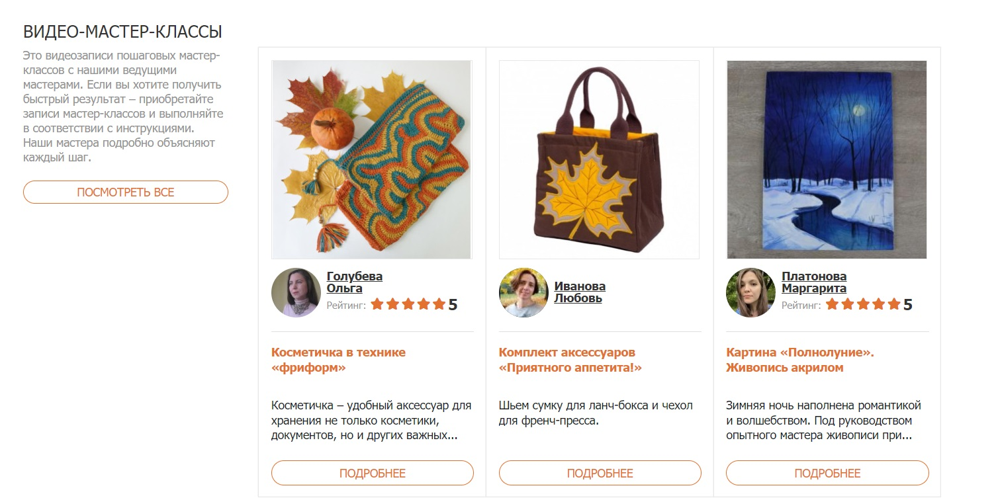
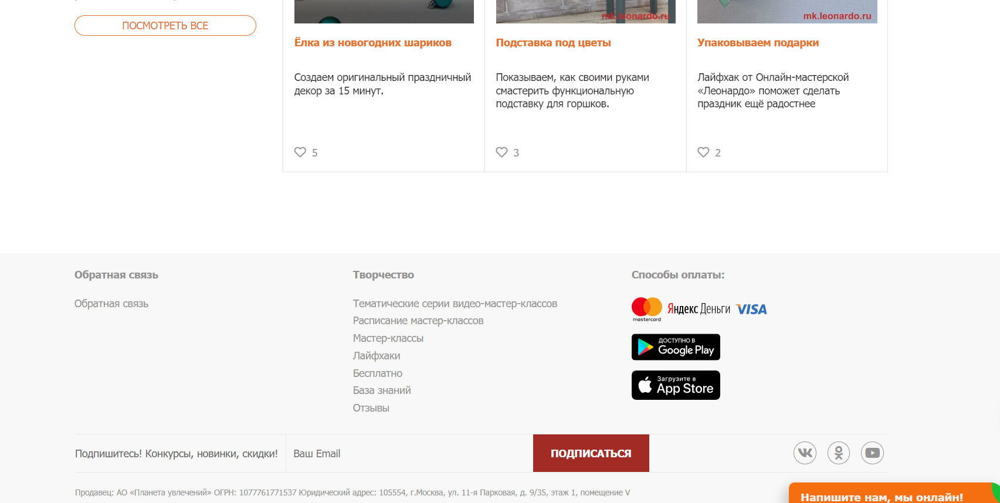
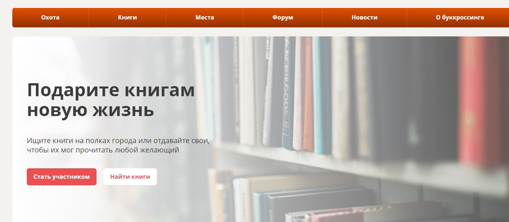
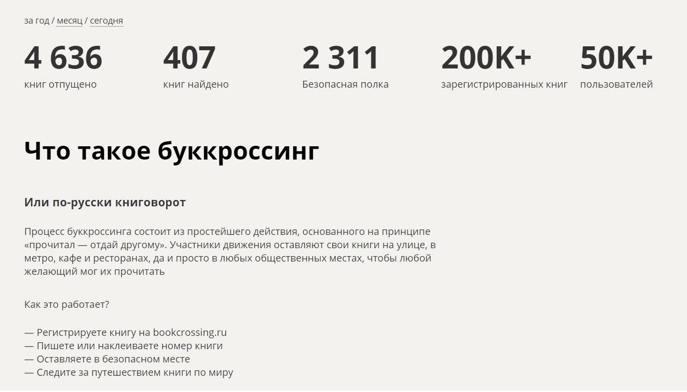

Проект 1: "Онлайн-магазин Art"
Этот проект представляет собой онлайн-магазин, специализирующийся на уникальных и ручной работы изделиях от талантливых художников и мастеров. HandCraftedHub предоставляет платформу для создания виртуального рынка, где покупатели могут находить и заказывать уникальные предметы искусства. Мы реализовали интуитивно понятный интерфейс для поиска и фильтрации товаров, а также безопасную систему онлайн-оплаты. Каждый продукт снабжен подробным описанием, фотографиями высокого разрешения и отзывами покупателей.


Проект 2: "Социальная сеть для обмена книгами - ReadConnect"
ReadConnect - это веб-приложение, созданное для любителей чтения, которые желают обмениваться книгами и общаться на тему литературы. Пользователи могут создавать профили, добавлять свои любимые книги в виртуальную библиотеку, а также предлагать обмен своими книгами с другими членами сообщества. Мы внедрили систему рекомендаций на основе предпочтений пользователей, форум для обсуждения книг, и систему уведомлений об обменах. ReadConnect способствует распространению читательской культуры и создает вдохновляющее виртуальное сообщество книголюбов.

